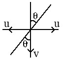
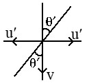
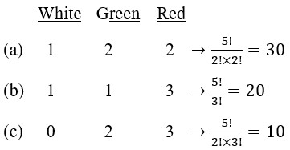
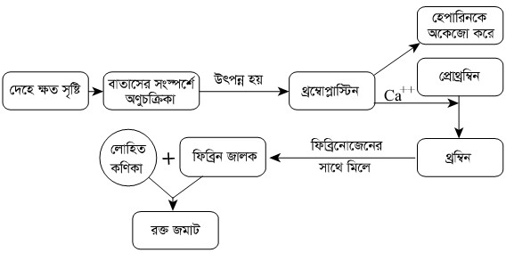

Analysis Report
Engineering + Biology Double Course (NEW) 2020
Varsity Standard Weekly MCQ and Written Live Exam -01
REJECTED
MCQ
Physics (6)
![]()
হলে বরাবর এর লম্ব অভিক্ষেপ কত?
লম্ব অভিক্ষেপ
একক
হলে a এর মান কত হলে সলিনয়ডাল হবে?
![]()
P বস্তুটিতে লব্ধি বলের মান কত?
X অক্ষ বরাবর লব্ধি বল
Y অক্ষ বরাবর লব্ধি বল
∴ লব্ধি বল
নিচের কোনটি নির্ণয়ের জন্য ইন্টিগ্রাল ক্যালকুলাস প্রয়োজন?
হলে এবং হলে
ভেক্টরটি Z অক্ষের সাথে কত কোণ তৈরি করে?
অতএব,
কোন নদীতে বেগে স্রোত প্রবাহিত হচ্ছে। কোন সাঁতারু সোজাসুজিভাবে বেগে সাঁতার কাটা শুরু করলে তার লব্ধি বেগ ও স্রোতের বেগের মধ্যবর্তী কোণ-
![]()
Chemistry (6)
ম্যাগনেসিয়ামের প্রথম, দ্বিতীয় ও তৃতীয় আয়নীকরণ শক্তি যথাক্রমে ও হলে এদের সঠিক ক্রম কোনটি?
ফ্লোরিনের অধিক সক্রিয়তার কারণ কী?
নিচের কোনটি মুদ্রা ধাতু?
f-ব্লক মৌলের সংখ্যা কয়টি?
কোনটি উভধর্মী অক্সাইড?
কোনটি অ্যাক্টিনাইড মৌল?
Mathematics (6)
একটি স্কুল ম্যানেজমেন্ট কমিটিতে 4 জন পুরুষ ও 3 জন মহিলা সদস্য আছেন। শুধু পুরুষ বা শুধু মহিলা নিয়ে 2 জন সদস্য বিশিষ্ট কতগুলো উপ-কমিটি হবে?
নির্ণেয় উপ-কমিটি
'VOWEL' এর ব্যঞ্জনবর্ণগুলোর ক্রম পরিবর্তন না করে কত উপায়ে সাজানো যায়?
পাশাপাশি অবস্থিত দুইটি সমান্তরাল সরলরেখার একটিতে 4 টি বিন্দু ও অন্যটিতে 3 টি বিন্দু আছে। বিন্দুগুলো সংযোগ করে সর্বোচ্চ কতগুলো ত্রিভুজ গঠন করা সম্ভব?
5 টি পোস্ট বাক্সে 7 টি চিঠি কতভাবে ফেলা যায়?
১ম চিঠি 5 টি পোষ্ট বাক্সে ফেলা যায় 5 উপায়ে। ২য় চিঠি 5 টি পোস্ট বাক্সে ফেলা যায় 5 উপায়ে। একইভাবে 7 টি চিঠিই 5 পোস্ট বাক্সে ফেলা যায় 5 উপায়ে। সুতরাং, মোট উপায় সংখ্যা
5, 6, 7, 8 অঙ্কগুলো কেবল একবার ব্যবহার করে চার অঙ্কবিশিষ্ট কতগুলো সংখ্যা গঠন করা যায়?
'DOCTOR' শব্দটির বর্ণগুলিকে কত প্রকারে সাজানো যায়?
∴ মোট সাজানো যায়
Biology (6)
ভেন্ট্রিকলের ডায়াস্টোলের সময়কাল কত?
অ্যাট্রিয়ামের ডায়াস্টোল - 0.7s; অ্যাট্রিয়ামের সিস্টোল - 0.1s; ভেন্ট্রিকলের ডায়াস্টোল - 0.5s; ভেন্ট্রিকলের সিস্টোল - 0.3s.
রক্তে শ্বেত রক্তকণিকার সংখ্যা স্বাভাবিকের চেয়ে কম থাকলে তাকে কী বলে?
শ্বেত রক্তকণিকা বেশি হলে লিউকোসাইটোসিস এবং শ্বেত রক্তকণিকা কম হলে লিউকোপেনিয়া।
কোনটি ফুসফুসে রক্ত সঞ্চালিত করে?
ফুসফুসে রক্ত সরবরাহ - ডান ভেন্ট্রিকল, সারাদেহে রক্ত সরবরাহ - বাম ভেন্ট্রিকল।
নিচের কোনটি রক্তের প্লাজমা প্রোটিন নয়?
রক্তের প্লাজমা প্রোটিন: অ্যালবুমিন, গ্লোবিউলিন, প্রোথ্রম্বিন, ফাইব্রিনোজেন।
কোনটি রক্তনালির সংকোচন ঘটিয়ে রক্তপাত হ্রাস করে?
নিচের কোন শ্বেত রক্তকণিকা অ্যামিবয়েড চলনে সক্ষম?
English (6)
A nutritious diet is beneficial___ health.
He himself fanned him. Here ‘himself’ is a/an-
The antonym of the word ‘APEX’ is-
Marlene is annoyed__ Courtney.
“His answer was a decided no.” Here the underlined word is-
The antonym of the word ‘BOMBASTIC’ is-
Written
Physics (4)
| ও একটি সামান্তরিকের দুইটি কর্ণ নির্দেশ করে। সামান্তরিকটির ক্ষেত্রফল নির্ণয় কর। | ৩ |
∴ সামান্তরিকটির ক্ষেত্রফল বর্গএকক
বর্গএকক
নম্বর বণ্টনঃ
বের করার জন্য ০১ নম্বর।
সামান্তরিকের ক্ষেত্রফলের সূত্র লিখার জন্য ০১ নম্বর।
এককসহ ক্ষেত্রফল বের করার জন্য ০১ নম্বর।
[বি.দ্রঃ একক না লিখলে বা ভুল একক লিখলে ০.৫ নম্বর কর্তন করা হবে। সূত্র না লিখে সরাসরি সঠিক মান বসালেও সূত্রের জন্য বরাদ্দকৃত নম্বর প্রদান করা হবে।]
| p ও q এর মান কত হলে ভেক্টর ক্ষেত্রটি সলিনয়েড ও অঘূর্ণনশীল উভয়ই হবে? | ৩ |
নম্বর বণ্টনঃ
Calculation করে q = -1 বের করার জন্য ১.৫ নম্বর।
Calculation করে p = -1 বের করার জন্য ১.৫ নম্বর।
| কোন একটি নৌকার একটি বিন্দুতে দুইটি রশি বেঁধে রশিদ্বয় ও বলে টানা হল। নৌকাটির ওপর ক্রিয়াশীল লব্ধি বলের মান এবং লব্ধি বলের দিক ও এর মধ্যবর্তী কোণ নির্ণয় কর। | ৩ |
একক (Ans.)
বিকল্প উত্তরঃ
একক
নম্বর বণ্টনঃ
বের করার জন্য ১.৫ নম্বর।
θ বের করার জন্য ১.৫ নম্বর।
| এক ব্যক্তি বেগে হাঁটার সময় লম্বভাবে পতিত বৃষ্টির সম্মুখীন হয়ে দেখল যে বৃষ্টি উল্লম্বের সাথে 30° কোণে তার মাথায় পড়ছে। লোকটি এরপর বেগে দৌঁড়ানো শুরু করলে বৃষ্টি থেকে রক্ষা পেতে হলে তাকে কত কোণে ছাতা ধরতে হবে? | ৩.৫ |


অর্থাৎ, ব্যক্তিটিকে উল্লম্বের সাথে 60° কোণে ছাতা ধরতে হবে।
নম্বর বণ্টনঃ
সূত্র লিখার জন্য ০১ নম্বর।
v বের করার জন্য ০১ নম্বর।
উল্লম্বের সাথে 60° কোণে ছাতা ধরতে হবে বের করার জন্য ১.৫ নম্বর।
[বি.দ্রঃ কোণটি যে “উল্লম্বের সাথে” তা চিত্রে বা লিখায় কোথাও না দেখালে ০.৫ নম্বর কর্তন করা হবে। অনুভূমিকের সাথে 30° কোণও গ্রহণযোগ্য। সূত্র না লিখে সরাসরি সঠিক মান বসালেও সূত্রের জন্য বরাদ্দকৃত নম্বর প্রদান করা হবে।]
Chemistry (4)
| আর্দ্র বিশ্লেষিত না হলেও আর্দ্র বিশ্লেষিত হয় কেন? ব্যাখ্যা কর। | ৩ |
পোলার এবং এর ফাঁকা অরবিটালে পানির অণু সন্নিবেশ বন্ধনের মাধ্যমে যোগ হতে পারে।
![]()
একইভাবে চার অণু পানি যুক্ত হয়ে গঠন করে ও এর আর্দ্র বিশ্লেষণ ঘটায়। কিন্তু এ তা ঘটে না বিধায় আর্দ্র বিশ্লেষিত হয় না।
এর কেন্দ্রীয় পরমাণু C-এ কোনো ফাঁকা d-orbital না থাকায় CCl4 আর্দ্র বিশ্লেষিত হয় না।
নম্বর বণ্টন:
পোলার এবং এর ফাঁকা অরবিটালে পানির অণু সন্নিবেশ বন্ধনের মাধ্যমে যোগ হতে পারে। কিন্তু এর কেন্দ্রীয় পরমাণু এ কোনো ফাঁকা d-orbital না থাকায় আর্দ্র বিশ্লেষিত হয় না, এটি যেকোন ভাবে বুঝিয়ে লিখার জন্য ০৩ নম্বর।
| (a) এর ইলেকট্রন বিন্যাস লিখ। | ১.৫ |
| (b) Ce কে অন্ত:অবস্থান্তর মৌল বলা হয় কেন? | 2 |
(b) Ce এর ইলেকট্রন বিন্যাস
Ce এর সুস্থিত আয়ন
একটি অন্ত:অবস্থান্তর মৌল।
নম্বর বণ্টন:
এর ইলেকট্রন বিন্যাস লিখার জন্য ১.৫ নম্বর।
এখানে, Ce এর স্থিতিশীল আয়নে f orbital আংশিক পূর্ণ থাকে, এটি যেকোন ভাবে বুঝিয়ে লিখার জন্য ০২ নম্বর।
| একটি উভধর্মী অক্সাইড। বিক্রিয়াসহ ব্যাখ্যা কর। | ৩ |
উভধর্মী অক্সাইডরূপে পৃথকভাবে গাঢ় দ্রবণ ও HCl এসিডের সাথে বিক্রিয়া করে প্রতি ক্ষেত্রে লবণ ও পানি উৎপন্ন করে।
ক্ষারকরূপে:
অম্লরূপে:
নম্বর বণ্টন:
এর সাথে যেকোন এসিড ও ক্ষারের বিক্রিয়া দুইটি সঠিকভাবে লিখার জন্য ১.৫×২= ০৩ নম্বর।
(বিক্রিয়া ছাড়া শুধু ব্যাখ্যা করলে সর্বোচ্চ ০১ নম্বর পাবে)
[বি.দ্রঃ বিক্রিয়ার সমতাকরণ করার প্রয়োজন নেই।]
|
নিচের বিক্রিয়াগুলো সম্পূর্ণ কর: |
৩ |
নম্বর বণ্টন:
বিক্রিয়া তিনটি সঠিকভাবে সম্পূর্ণ করার জন্য ৩×১= ০৩ নম্বর।
Mathematics (4)
| ‘THESIS’ শব্দটির অক্ষরগুলি থেকে প্রতিবারে 4 টি অক্ষর নিয়ে মোট সমাবেশ সংখ্যা নির্ণয় কর। | ৩ |
শব্দটিতে মোট বর্ণ আছে 6 টি, যার মধ্যে S আছে 2 টি, বাকিগুলো ভিন্ন ভিন্ন।
2 টি S ও 2 টি ভিন্ন বর্ণ নিয়ে সমাবেশ সংখ্যা
সবগুলো ভিন্ন বর্ণ নিয়ে সমাবেশ সংখ্যা
∴ মোট সমাবেশ সংখ্যা = 6+5=11 (Ans.)
নম্বর বণ্টনঃ
নির্ণয়ের জন্য ০১ নম্বর।
নির্ণয়ের জন্য ০১ নম্বর।
ফলাফল নির্ণয়ের জন্য ০১ নম্বর।
[বি.দ্র: ফলাফল নির্ণয়ের ক্ষেত্রে, যোগের পরিবর্তে গুণ করলে শুধু ১.৫ নম্বর পাবে।]
| ‘Postage’ শব্দটির অক্ষরগুলিকে কত প্রকারে সাজানো যেতে পারে যাতে স্বরবর্ণগুলি জোড় স্থান দখল করবে? কতগুলিতে ব্যঞ্জনবর্ণগুলি একত্রে থাকবে? | ৩ |
মোট বর্ণ আছে 7 টি, সবগুলো ভিন্ন ভিন্ন। যাদের মধ্যে স্বরবর্ণ আছে 3 টি (o, a, e), ব্যঞ্জনবর্ণ আছে 4 টি (p, s, t, g)
স্বরবর্ণগুলি জোড় স্থানে রেখে সাজানো যায় (3!×4!) বা, 144 উপায়ে (Ans.)
ব্যঞ্জনবর্ণগুলি একত্রে রেখে সাজানো যায় (4!×4!) বা, 576 উপায়ে (Ans.)
নম্বর বণ্টনঃ
3!×4!=144 লেখার জন্য ১.৫ নম্বর।
4!×4!=576 লেখার জন্য ১.৫ নম্বর।
| একজন সংকেত দাতার ছয়টি পতাকা আছে, যাদের একটি সাদা, দুইটি সবুজ ও তিনটি লাল। তিনি এক সঙ্গে 5 টি পতাকা ব্যবহার করে কয়টি ভিন্ন সংকেত দিতে পারবেন? | ৩.৫ |
5 টি পতাকার সম্ভাব্য নির্বাচন নিম্নরূপ হতে পারে:

∴ মোট সংকেত সংখ্যা = 30 + 20 + 10 = 60
নম্বর বণ্টনঃ
লেখার জন্য ০১ নম্বর।
লেখার জন্য ০১ নম্বর।
লেখার জন্য ০১ নম্বর।
ফলাফল নির্ণয়ের জন্য ০.৫ নম্বর।
[বি.দ্র: ফলাফল নির্ণয়ের ক্ষেত্রে, যোগের পরিবর্তে গুণ করলে শুধু ০২ নম্বর পাবে।]
| 3, 4, 5, 3, 4, 5, 6 অঙ্কগুলির বিজোড় অঙ্কগুলি সর্বদাই বিজোড় স্থানে রেখে সাত অঙ্কের কতগুলি সংখ্যা গঠন করা যেতে পারে? | ৩ |
মোট অঙ্ক আছে 7 টি, যার মধ্যে বিজোড় অঙ্ক আছে 4 টি।
∴ সংখ্যার সংখ্যা
নম্বর বণ্টনঃ
লেখার জন্য ০৩ নম্বর।
Biology (4)
| হেপাটিক পোর্টল সংবহন বলতে কি বুঝায়? এর প্রয়োজনীয়তা লিখ। | ৪ |
পাকস্থলি, ক্ষুদ্রান্ত্র, অগ্ন্যাশয়, অন্ত্র ও প্লীহা থেকে কৈশিক জালিকার মাধ্যমে সংগৃহীত রক্ত হেপাটিক পোর্টাল শিরার ভিতর দিয়ে যকৃতের দিকে প্রবাহিত হওয়াকে হেপাটিক পোর্টাল সংবহন বলে।
হেপাটিক পোর্টল সংবহনের প্রয়োজনীয়তা:
i. পৌষ্টিকনালি থেকে শোষিত সরল খাদ্য (গ্লুকোজ, অ্যামিনো এসিড, ফ্যাটি এসিড ইত্যাদি) পোর্টাল সংবহনের মাধ্যমে যকৃতে আসে।
ii. দূষিত নাইট্রোজেন ঘটিত পদার্থ অ্যামোনিয়া যকৃতে ইউরিয়ায় পরিণত হয়ে বৃক্কের মাধ্যমে দেহের বাইরে নির্গত হয়। ফলে রক্ত পরিশুদ্ধ হয়।
iii. যকৃত রক্তে প্রোটিন উৎপন্ন করে রক্তে সরবরাহ করে।
নম্বর বণ্টনঃ
(পাকস্থলি, ক্ষুদ্রান্ত্র, অগ্ন্যাশয়, অন্ত্র ও প্লীহা) যেকোনো দুইটি নাম লেখার জন্য ০.৫ নম্বর।
কৈশিক জালিকার মাধ্যমে হেপাটিক পোর্টাল শিরার মধ্য দিয়ে যকৃতে বাহিত হয় লেখার জন্য ০.৫ নম্বর।
৩টি প্রয়োজনীয়তা লেখার জন্য (৩ × ১) = ০৩ নম্বর।
| সিরাম কী? প্রক্রিয়াটি বর্ণনা কর। | ৩ |
রক্ত জমাট বাঁধা শেষ হলে জমাট থেকে যে হলুদ তরল বেরিয়ে আসে তা সিরাম।
প্রক্রিয়াটির বর্ণনা:

নম্বর বণ্টনঃ
সিরামের সংজ্ঞা লেখার জন্য ০১ নম্বর।
জমাট বাঁধার প্রক্রিয়ার প্রতিটি ধাপের জন্য ০.৪ করে ৫ ধাপের জন্য (০.৪ × ৫) = ০২ নম্বর।
জমাট বাধার ৪টি ফ্যাক্টর (থ্রম্বোপ্লাস্টিন, Ca2+, প্রোথ্রম্বিন ও ফিব্রিনোজেন) এর নাম উল্লেখ বাধ্যতামূলক।
| প্লাজমা কি? প্লাজমা প্রোটিনগুলোর নাম লিখ। | ২.৫ |
রক্তরস বা প্লাজমা হচ্ছে রক্তের হালকা হলুদ বর্ণের তরল অংশ।
প্লাজমা প্রোটিনগুলোর নাম:
i. অ্যালবুমিন
ii. গ্লোবিউলিন
iii. প্রোথ্রম্বিন
iv. ফাইব্রিনোজেন
নম্বর বণ্টনঃ
হালকা হলুদ বর্ণের তরল অংশ লেখার জন্য ০.৫ নম্বর।
৪টি প্লাজমা প্রোটিনের নাম লেখার জন্য (৪ × ০.৫) = ০২ নম্বর।
| সবচেয়ে ছোট রক্ত কণিকা কোনটি? এর কাজ লিখ। | ৩ |
সবচেয়ে ছোট রক্ত কণিকা অণুচক্রিকা।
অণুচক্রিকার কাজ:
i. ক্ষতস্থানে রক্ত তঞ্চনের জন্য প্রয়োজনীয় থ্রম্বোকাইনেজ এনজাইম সৃষ্টি করে এবং হিমোস্ট্যাটিক প্লাগ গঠন করে রক্তক্ষরণ বন্ধ করে।
ii. রক্তনালির ক্ষতিগ্রস্ত এন্ডোথেলিয়াল আবরণ পুনর্গঠন করে।
iii. সেরোটোনিন ক্ষরণ করে যা রক্তনালির সংকোচন ঘটিয়ে রক্তপাত হ্রাস করে।
iv. ফ্যাগোসাইটোসিস পদ্ধতিতে কার্বন কণা, ইমিউন কমপ্লেক্স ও ভাইরাসকে ভক্ষণ করে।
v. হিস্টামিন ও 5–Hydroxytryptamine (5HT বা সেরোটোনিন) সঞ্চয় করে।
নম্বর বণ্টনঃ
অণুচক্রিকা লেখার জন্য ০.৫ নম্বর।
৫টি কাজ লেখার জন্য (৫ × ০.৫) = ২.৫ নম্বর।
English (4)
| Fill in the blanks with appropriate prepositions: | 1x3=3 |
(a) Pasha alluded___ the story in his speech.
(b) Charles Babbage’s mechanical calculating engines were the antecedents___ the modern computer.
(c) Alone and penniless, Gary was bereft___ hope.
(a) to (b) of (c) of
| Complete the following sentences: | 1x3=3 |
(a) Graham hurt____ leg. (his/him)
(b) William Shakespeare is_____ whom I have always admired. (someone/anyone)
(c) You’ll stick ___ the pins if you’re not careful. (your/yourself)
(a) his (b) someone (c) yourself
| Complete the sentences with suitable words: | 0.7x5=3.5 |
(a) One of the characteristics in the forward surge of mankind to greater civilization is a growing___ of all forms of cruelty. (abhor)
(b) Barry had____ the good name of his family by misdeed. (fame)
(c) A deeply ingrained_____ prevented her from even considering the counterarguments. (bigot)
(d) The thought of war____ me. (appalling)
(e) His humor was___, never cruel or hurtful. (benignant)
(a) abhorrence (b) defamed (c) bigotry (d) appalls (e) benign
| Fill in the blanks with suitable words: | 1x3=3 |
(a) Noun form of the word ‘deny’ is____. (denial/denying)
(b) A____ people left too early. (little/few)
(c) Greta doesn’t have___ money. (many/much)
(a) denial (b) few (c) much